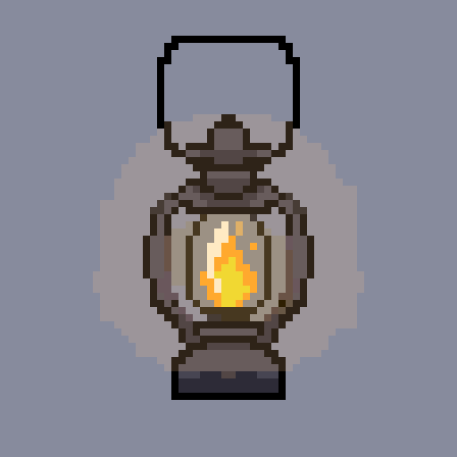
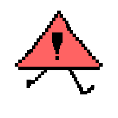
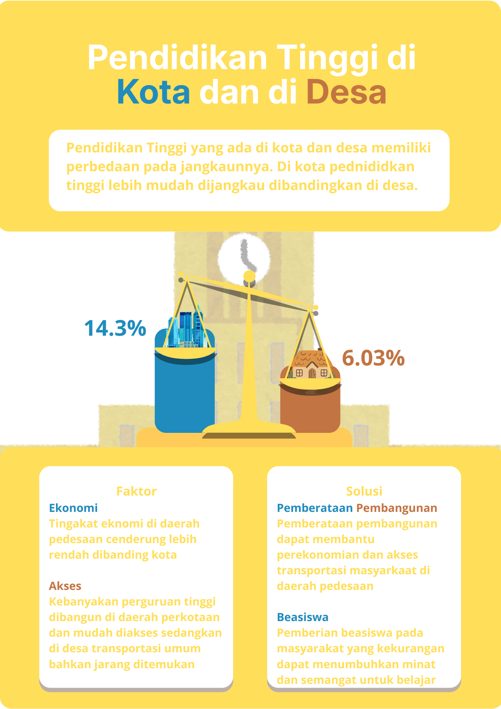
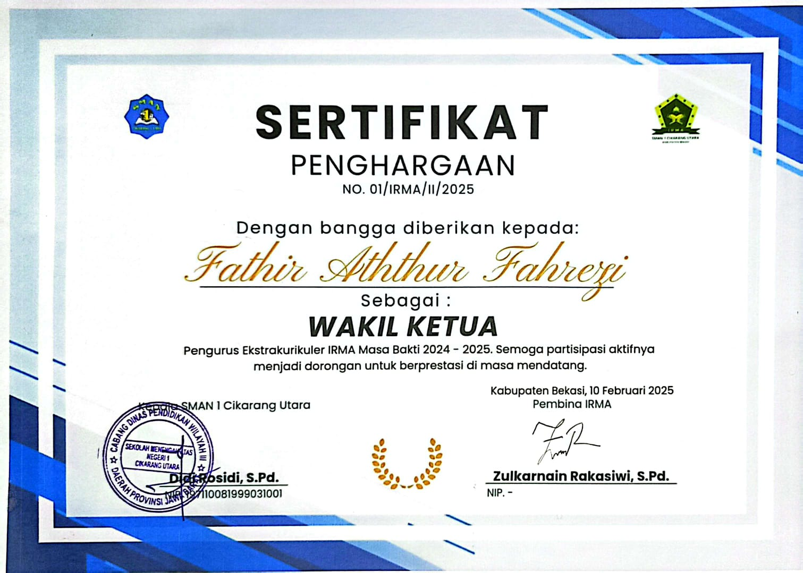

Seperti moto saya: "Keterlambatan bukanlah pilihan". Ini membuat kemampuan untuk mengatur waktu menjadi penting.
Dengan mengatur waktu dengan baik, saya dapat menjalankan kehidupan pribadi dan organisasi secara bersamaan,
tanpa
harus mengorbankan salah satu dari keduanya.


Wakil ketua IRMA periode 2024-2025
Email: aththur909@gmail.com